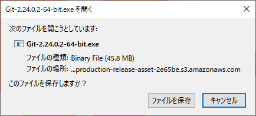
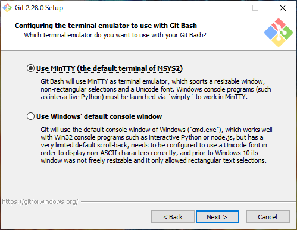
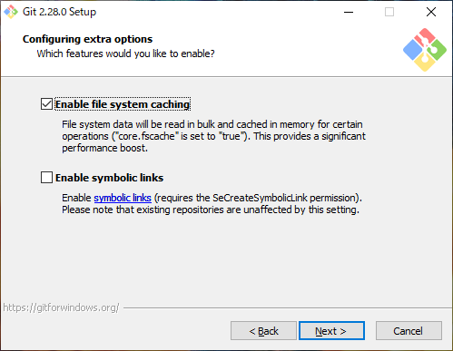
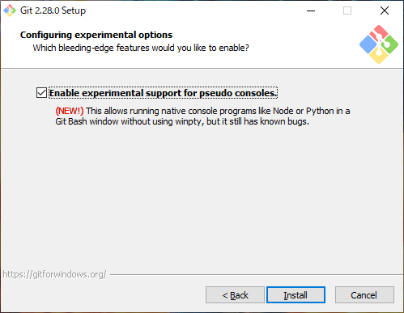
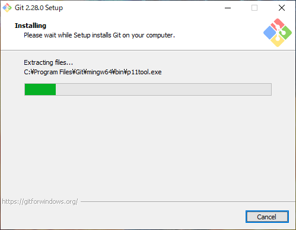

Introduction
nodistの設定
pythonの設定
rubyの設定
gitの設定
inputの設定
参考
GitBookで公開
gitの設定
git set up
Git for Windows
steps
Gitのインストーラーに従ってインストールします。





Git BashでGitHubにSSH接続
参考：
[Windows 10] Git BashでGitHubにSSH接続
参考：
【Git】Windows環境でGitHubにSSH接続してコミットするまでの手順
results matching "
"
No results matching "
"